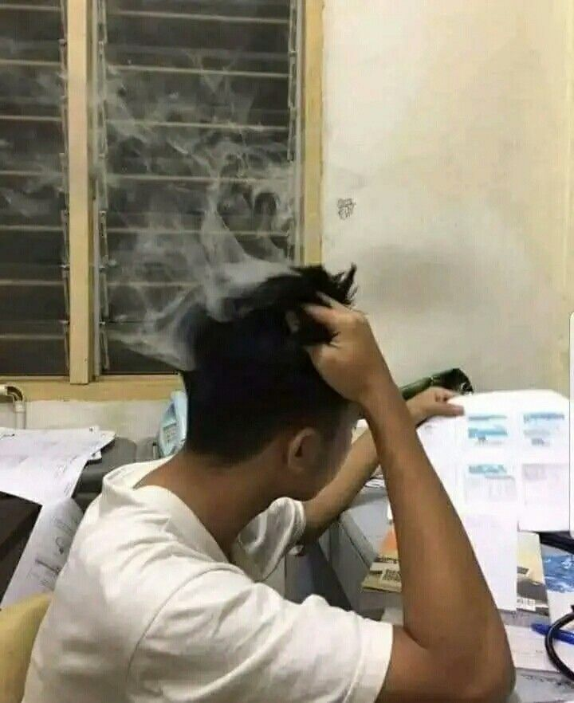
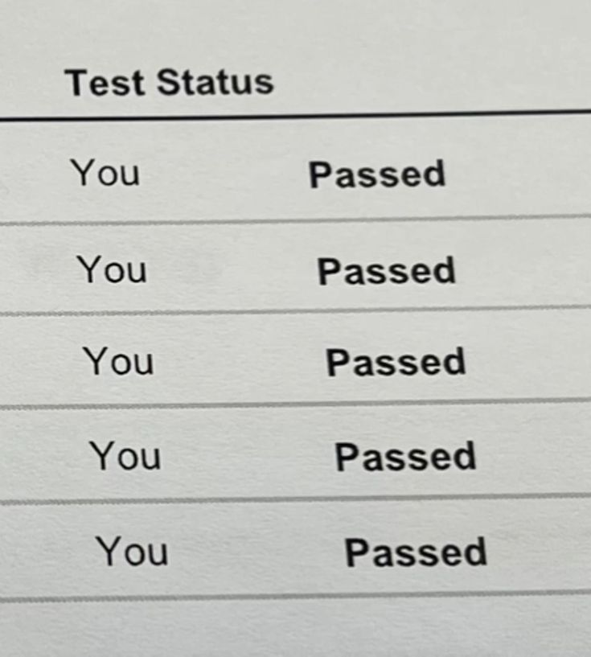
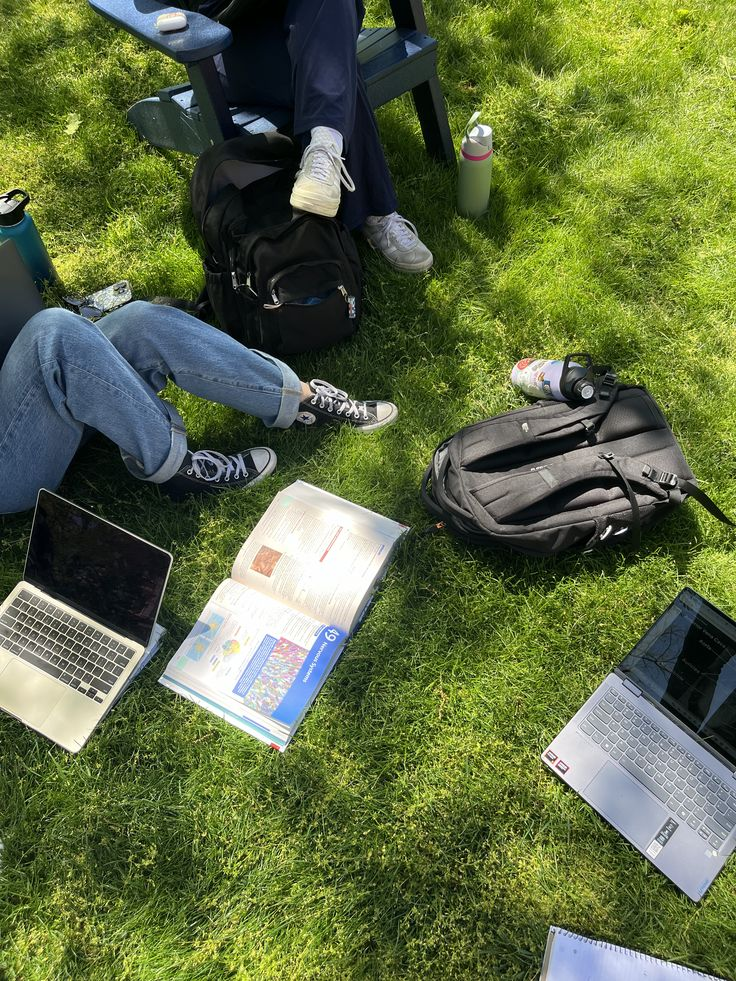
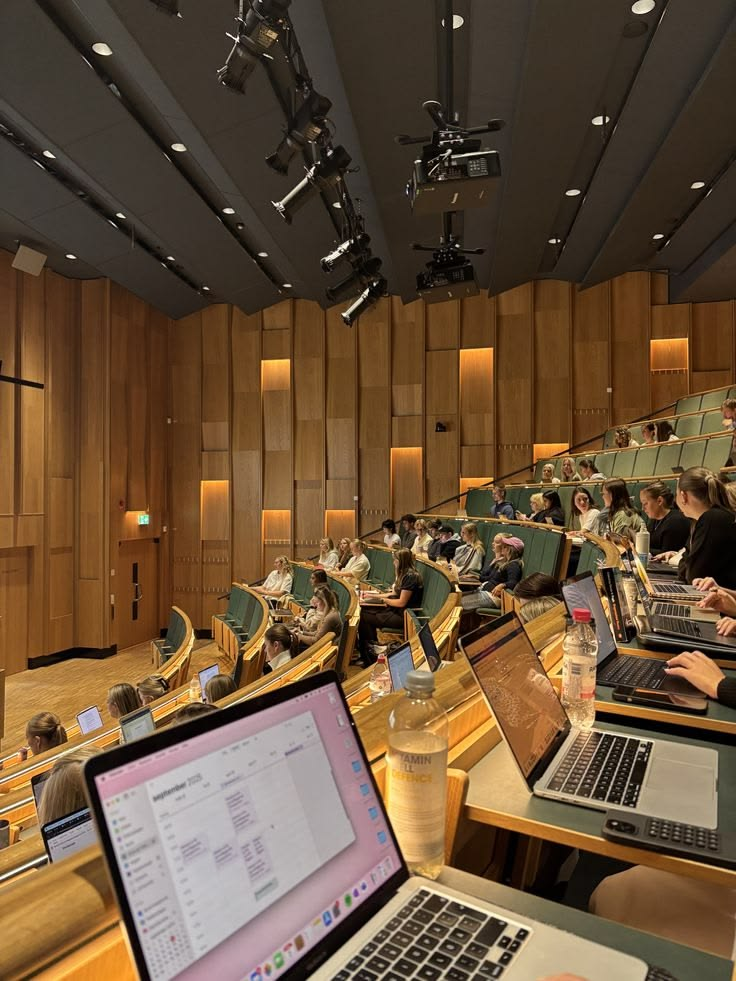
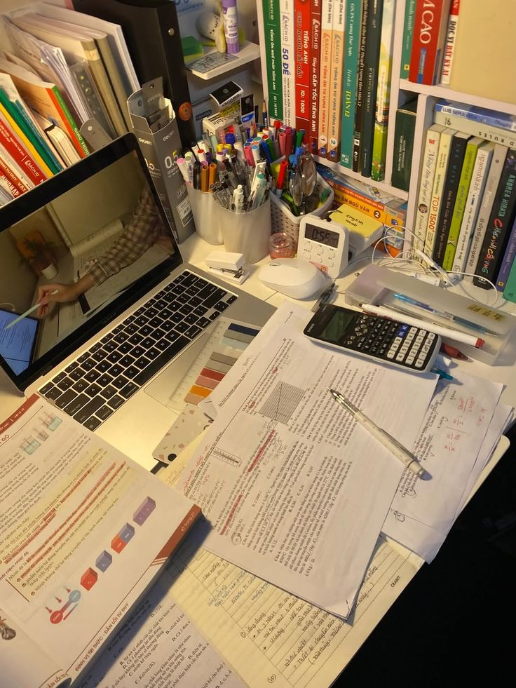
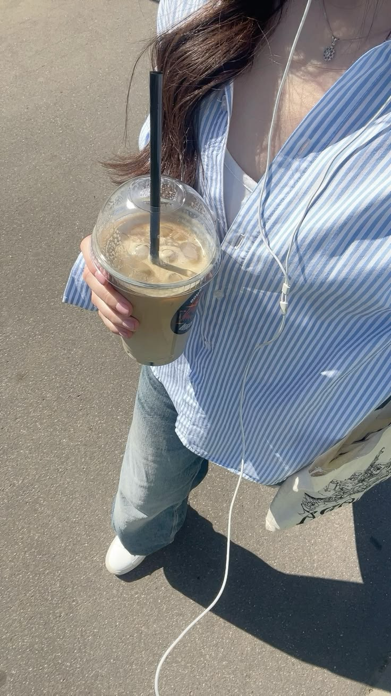
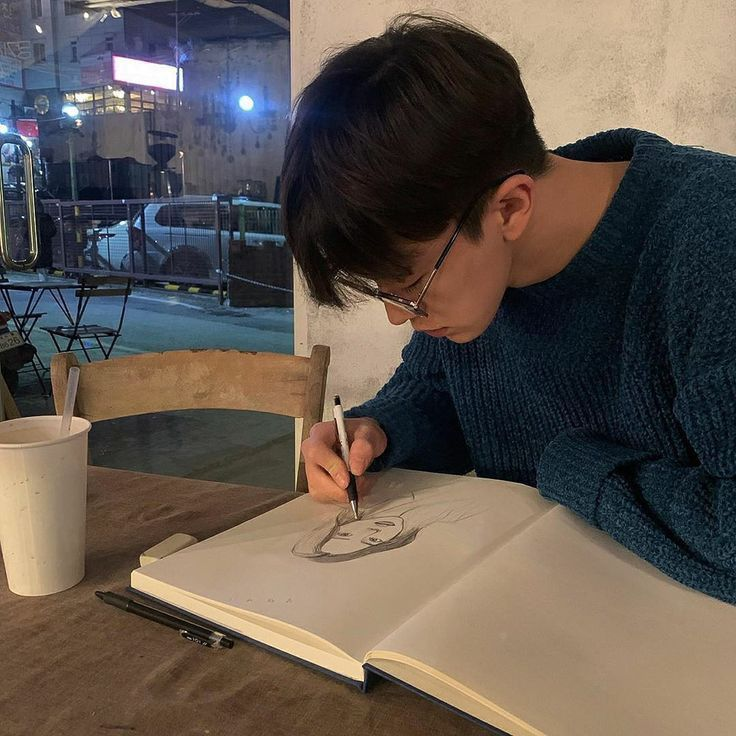
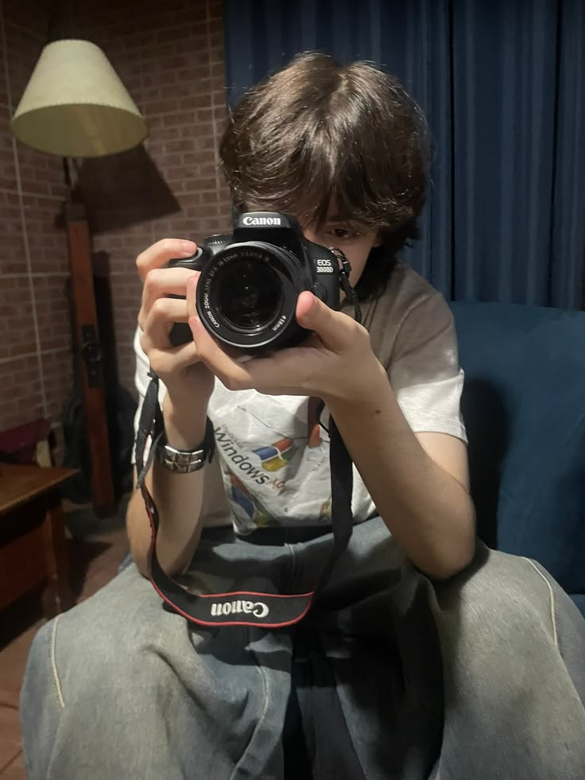

Gak zaman lagi milih jurusan karena ikut-ikutan teman atau nebak-nebak berhadiah. Petakan karakter otak & superpower alamimu lewat tes interaktif 20 menit sekarang!
Kalau kamu anak SMA/SMK kelas 10–12, kemungkinan besar minimal satu dari empat hal ini lagi kamu rasain tiap hari. Tenang, kamu gak sendirian.
Tiap kumpul keluarga mati gaya karena belum punya jawaban pasti.
Ortu maunya Kedokteran/Hukum, padahal bakatmu di Desain, IT, atau Bisnis.
Ngebayangin begadang ngerjain tugas yang materinya gak masuk sama sekali di otak.
Takut berpisah sama bestie, padahal gaya belajar kalian beda banget.
Satu tes interaktif, lima tools psikologi (RIASEC, MBTI, DISC, 16PF, VAK) digabung jadi 19-faktor student map yang ngebaca karaktermu dari berbagai sisi.
Bukan tebakan — dihitung dari kecocokan minat, kepribadian, dan gaya berpikirmu.
Biar belajar UTBK cepat nempel nggak pake burnout — tahu kamu tim Visual, Auditori, atau Kinestetik.
Bantu kamu meyakinkan orang tua pakai DATA objektif, bukan emosi.
Galau jam 12 malam soal prospek kerja? Takut dihakimi kalau nanya ke orang? AI Counselor Better Future selalu online, selalu dengerin, dan jawab pakai data — bukan ceramah.
"curhat soal masa depan itu valid. kamu gak lebay, kamu cuma peduli sama hidupmu xx"
Cuma 20 menit dari HP — gak perlu instal aplikasi, langsung main di browser.
Karakter 19-faktormu divisualisasikan jadi radar chart yang satisfying banget.
Pakai draf laporan rahasia — ngomong sama ortu jadi adem karena ada datanya.

"Dulu dipaksa Kedokteran, pas tunjukin laporan Better Future ke Papa, beliau langsung setuju aku masuk DKV!"

"Ternyata tipe belajarku Auditori-Kinestetik. Pantesan baca buku mulu bikin ngantuk. Nilai tryout langsung naik!"
"AI Counselor-nya seru banget diajak curhat jam 1 malam pas galau jurusan!"

"Gak perlu nebak-nebak lagi. Laporannya lengkap & gampang dipahami."
100% gratis, gak ada biaya tersembunyi. Kamu langsung dapat ringkasan hasil, radar chart karakter, dan top rekomendasi jurusan tanpa bayar sepeser pun.
Sekitar 20 menit dari HP. Soalnya interaktif dan seru — bukan soal ujian. Bisa dikerjain sambil rebahan, di perjalanan, atau pas jam kosong di sekolah.
Sistem kami mendeteksi pola jawaban yang gak konsisten, dan hasilnya jadi gak akurat — yang rugi kamu sendiri. Isi dengan jujur sesuai apa yang kamu rasain, bukan apa yang "kayaknya bener".
Tenang — kamu dapat Draf Laporan Rahasia "Bicara Sama Ortu". Isinya data objektif: kecocokan jurusan, prospek karir, dan gaya belajarmu, ditulis dengan bahasa yang sopan dan meyakinkan. Jadi diskusinya adem, bukan debat.